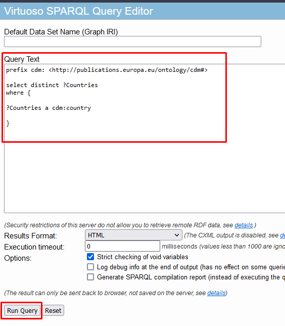
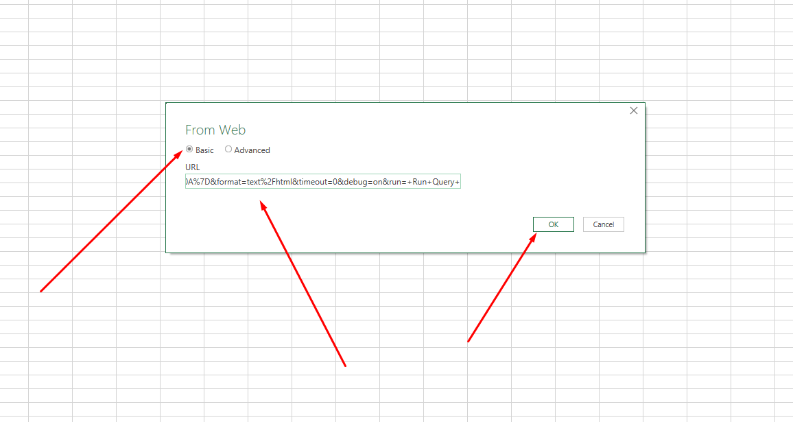

Microsoft Excel
This section shows an example of getting data from Cellar using Microsoft Excel. The same method can be used in Power BI via Power Query, a mechanism to connect to many different data sources (including SPARQL endpoints) and transform the data into the shape you want.
To fetch data from Cellar follow the next steps:
-
Use Cellar SPARQL endpoint interface to prepare an URL with an embedded SPARQL query:
-
Insert query
Example query:
prefix cdm: <http://publications.europa.eu/ontology/cdm#>
select distinct ?Countries
where {
?Countries a cdm:country .
}| When this documentation was written, no TED notices in RDF format were yet available in Cellar. This document will be updated removing this warning when data is publicly available. For now, we use a sample SPARQL, which returns a list of countries instead of TED specific data. |
-
Push the "Run Query" button

-
Copy the URL with the embedded SPARQL query
-
Access result table via Excel:
-
Click on Data → From Web button
-
-
In appeared window insert result link then press OK:

-
In result window select necessary table, press load: